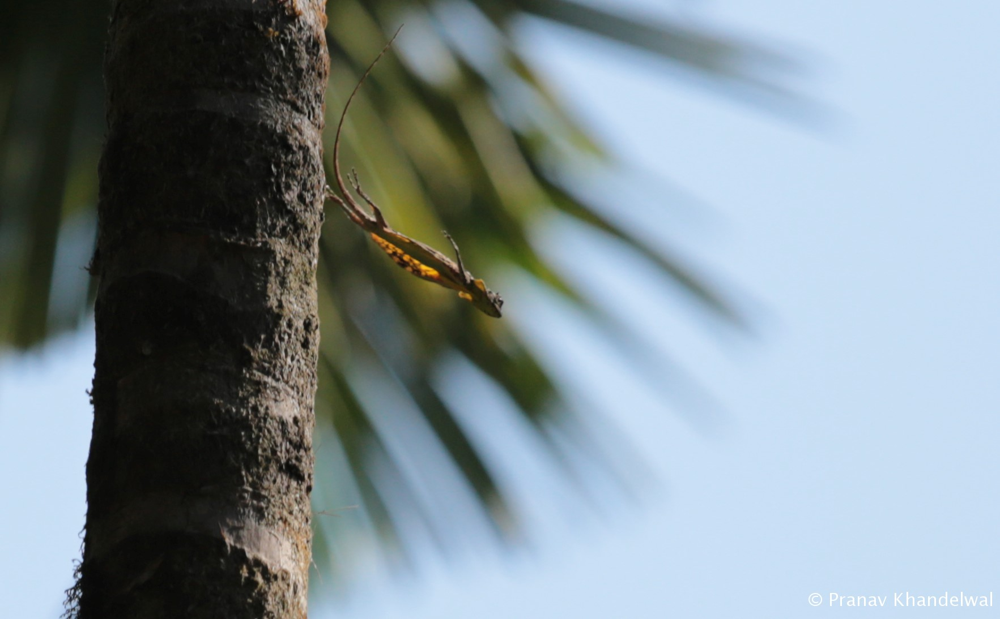

fieldwork
A lot that leads to the final product over many years remains unseen - here's a small catalogue of the behind the scenes...
Field season 2017
~3 months in the Agumbe rainforest collecting gliding data on flying lizards. Majority of the funding was raised from a crowdfunding campaign. This field season took ~2 years of preparation from raising funds, finalizing all the equipment, testing, getting permissions...to hiring an awesome field assistant (shoutout to Steve Rodgie) and finalizing the travel and field site reservations.
The goal of the field season was to collect high quality behavioral and kinematic data of these fascinating lizards in the wild with the goal to understand the aerodynamics of gliding, and how different natural behaviors like foraging, mate-seeking, territoriality manifest in their glide biomechanics. Furthermore, this also allowed to gain insights into sex-specific differences in their glide performance.
flying lizard in the wild
During the mating season, flying lizards are extremely active, allowing for some action packed glides and maneuvers. Below are a few images of the lizard in action along with some non-gliding shots.

marking trees
Quantifying the territorial behavior (males defend territories to gain sole access to food and females) required recording the distribution of individuals throughout the field site. We marked all 912 trees on our field site with unique alphabet and number combination to keep a track of the lizard population distribution.

catching flying lizards
Identifying individuals was important to track the lizard distribution and also collect morphometric measurements for biomechanical analysis. Catching an individual was a team effort. Use binoculars to spot an individual high-up in the trees. We used a neat contraption (shoutout to Shankar C.M.) which allowed easy capture of the lizard without hurting them. Using tripod poles and a metal tong, Shankar was able to make a long pole (6m) with a horseshoe shaped wire attached to the tong at one end which was wrapped with a thick soft padding and cloth hanging from it. A string connected to the horseshoe shaped wire hung at the other end. When pulled, the string would close the horseshoe, wrapping it around the tree trunk; this would force the lizard to climb downwards, and right into our waiting palms! The bottom animation shows Steve and I using the contraption make by Shankar to catch the lizard. (video credits: Sugandhi Gadadhar and Rana Belur.)

marking and measuring
Once the lizards were caught, Steve and I used an electronic weighing scale to measure their weight and clicked images of the lizard against a graph sheet (left image). These images could be used later to extract various morphometric measurements of the animal. Finally, each individual was given a unique id by painting a number on its dorsal side (right image). This allowed for easy identification of the individual in the jungle and ensured that we recorded data from as many different individuals as possible.


image credits: Sugandhi Gadadhar and Rana Belur.
MOCAP in the jungle
To collect high resolution 3D kinematic, body pose and orientation data, we constructed a motion capture arena in the jungle. Below is an overhead drone shot of the jungle and the motion capture arena (constructed using white sheets for high contrast during motion tracking).

setting up the MOCAP arena
We set up seven GoPro cameras to record the lizard gliding from the takeoff tree on the right to the landing tree on the left. Two cameras were mounted on and next to the takeoff tree, followed by the four cameras on the ground and one camera on the landing tree.

For more behind the scenes, do check out the lab notes which Steve and I are uploaded during the field season here.